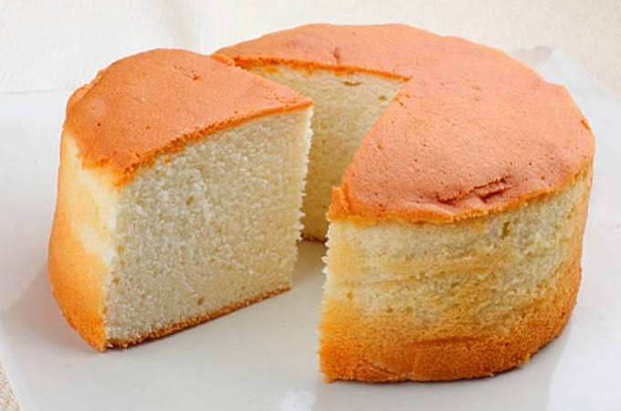

Queque Panini

Queque casero - Panini
Receta Queque Panini
Nada mejor que un rico queque tradicional para comerlo en familia en un
dia de inivierno, una rica once tradicional chilena con nuetros
Queques Caseros Panini.
Ingredientes
Masa
- Huevos: 3
- Azucar: 1 taza (200gr)
- Aceite vegetal: 1/2 Taza (o mantequilla derretida)
- Leche: 1/2 Taza(o yogurt natural)
- Harina: 2 Tazas (sin polvos de hornear)
- Escencia de vainilla: 1 cucharadita.
- Ralladura de limon o naranja (1 unidad)
- Sal: 1 Pizca
Pasos
- Precalienta el horno a 180 °C (temperatura media).
-
Prepara el molde untándolo con un poco de mantequilla o aceite y
espolvoreando harina para que no se pegue.
-
Bate los huevos con el azúcar en un bol grande hasta que la mezcla se
vea clara, inflada y espumosa.
-
Agrega los líquidos, incorporando el aceite, la leche, la esencia de
vainilla y la ralladura de cítricos si decidiste usarla. Mezcla bien.
-
Incorpora los secos pasando la harina, los polvos de hornear y la sal
por un colador o tamiz. Junta todo con movimientos suaves o un tenedor
solo hasta que no queden grumos (evita batir en exceso para que la masa
quede blanda).
-
Hornea el queque vertiendo la masa en el molde y cocinándolo durante 40
a 45 minutos. No abras el horno antes de los 30 minutos para evitar que
se baje.
-
Verifica la cocción introduciendo un palito de madera o un cuchillo en
el centro. Si sale completamente seco y limpio, tu queque está listo.
Deja enfriar antes de desmoldar.
Back to Home